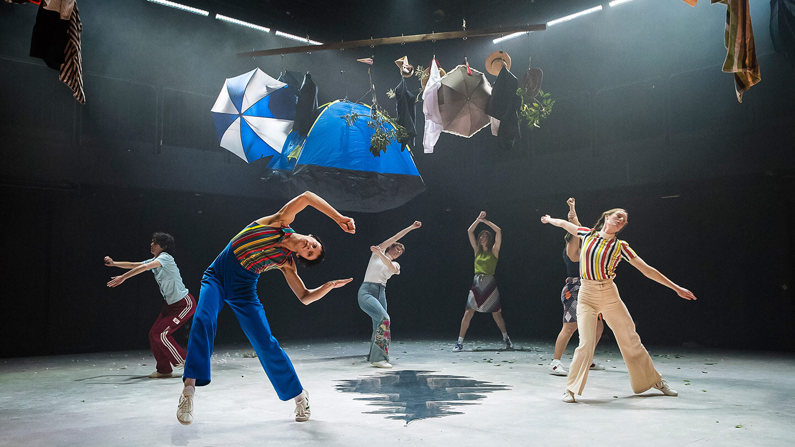
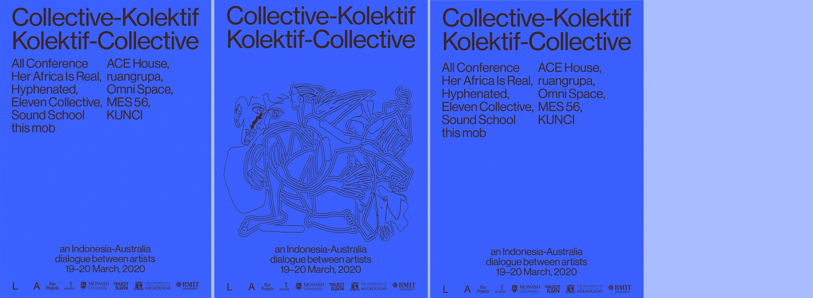
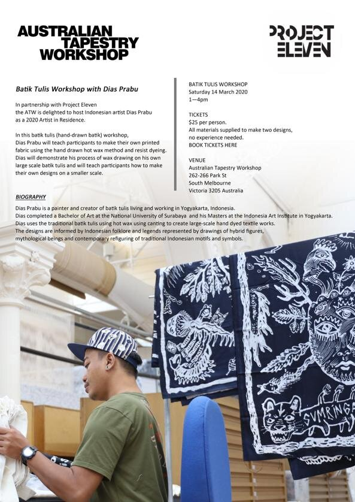
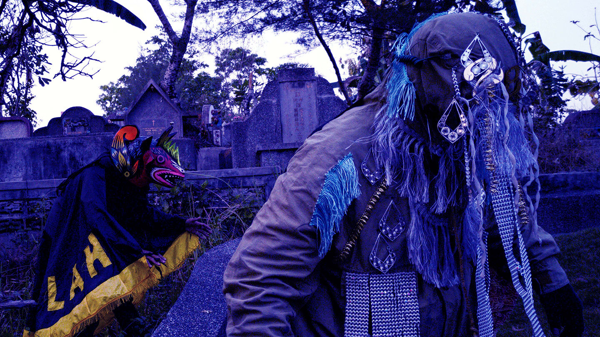
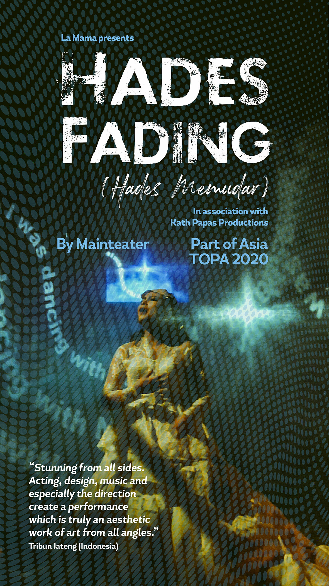
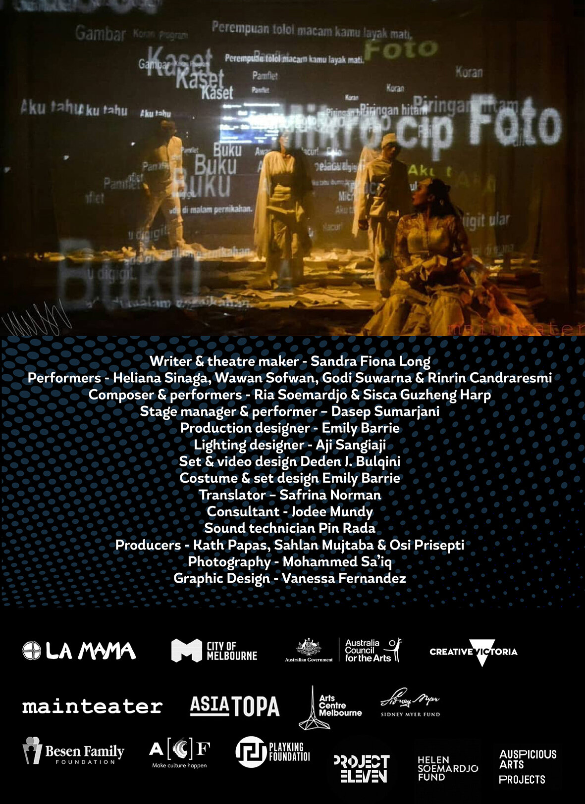

Image by Thomas Henning with Wayang Polah and Survive!Garage
We are proud to support Rumah Lengger, a foundation founded by Banyumasan dancer and choreographer Rianto to help preserve and support the new generation of creative art practitioners in East Java. This is a trailer of a film about 3 generations of Lengger dancers, a form of cross-gender dance unique to the area.

Take Over! is a unique partnership between Arts Centre Melbourne and Melbourne Fringe. The program supports visionary artists to push their creative boundaries. Through an open-call out to mid-career and established artists, the program has commissioned and presented three exciting and ambitious world premieres annually since 2017. In 2020, Take Over! is taking a different approach and will be both an online and live project. We are pleased to support the project together with Anne Runhardt & Glenn Reindel.

‘Collective-Kolektif’ hosted Indonesian collectives including KUNCI Cultural Studies Center, Ace House, OMNI space, Ruang MES 56, and ruangrupa; alongside Melbourne-based groups, This Mob, Her Africa Is Real, All Conference, Hyphenated Projects, eleven-collective, and Sound School.
Artist collectives today can be understood as political, industrial, and artistic approaches to self-organisation with creatives collectivising with the aim of achieving forms of autonomy. Historically, a number of Indonesian collectives have formed out of friendships, shared ideologies or political agendas as well as the lack of public funding for developing the arts. Meanwhile, in Melbourne, the artist-run-initiative scene has typically functioned as an enabler or producer, with the founding of collectives making space for emerging and experimental practices post-university. However, Australia has seen a re-emergence of artist collectives as political acts of artistic independence and platforms for alternative narratives.
Through discussions, ‘Collective-Kolektif’ asked how and why artists work together; what are the conditions required for collectives to thrive; and what is the role of learning and exchange in collectives?
This 2-day discussion was hosted by Bus Projects and Liquid Architecture at their new location at Collingwood Yards. The event was a partnership between Project Eleven, All Conference, CAST Research and Public Engagement groups at RMIT University, Faculty of Art, Design and Architecture at Monash University, and the Asia Institute of the Faculty of Arts at the University of Melbourne, with support from The Australian Council of University Art and Design Schools (ACUADS).

Batik artist Dias Prabu undertook a 3-week residency with the Australian Tapestry Workshop in March 2020, following his solo exhibition at 16albermarle in Sydney. As part of his residency, he gave workshop on the art and techniques of ‘batik tulis’.

Project Eleven is pleased to support HuRU-hARa at Abbotsford Convent from 20 February - 1 March 2020.
HuRU-hARa features avant-garde artists from across Australia and the Nusantara archipelago of South East Asia, drawing on lo-fi, DIY aesthetics and street culture to transform the Convent’s Industrial School and Sacred Heart courtyard into a living installation and non-stop party. From projections to pop up performances, the installation will evolve around a lo-fi dive bar and hotplate street eats, open from 7pm to late each night. HuRU-hARa will bring together experimental artists working in visual art, sculpture, video, live music, street and graffiti art, performance and dance.

